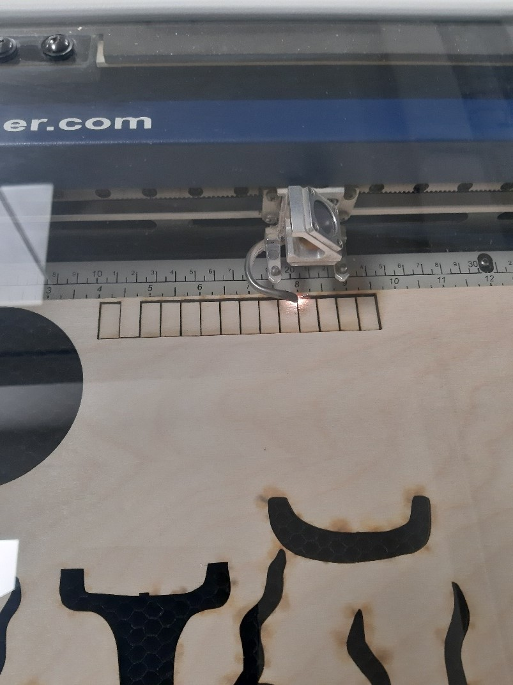

Þetta verkefni er hópverkefnis hluti af Verkefni 2. Verkefnið var unnið í hóp sem samanstóð af Birtu Hákonardóttur, Davíð Rúnari Matthíassyni og Elísu Ósk Jónsdóttur.
Í verkefninu átti að velja sér laserskera og ákvarða með prófunum kerf fyrir þann skera. Laser skerinn sem valinn var má sjá á myndinni hér að neðan:

Þessi prófun var gerð til þess að allir hlutar í hönnuninni í verkefni 2 passi sem best saman. Hafa þarf í huga að laser skerans hefur radíus, sem við köllum kerf, og fjarlægir þannig alltaf einhvern hluta af efni sem kemur niður á hönnuninni ef ekki er gert ráð fyrir því.
Með því að skera út 10-15 kassa og framkvæma nokkrar mælingar var hægt að áætla með nokurri nákvæmni hve mikið af efni var fjarlægt með einum skurði. Hópurinn ákvað að skera líka út 2 bita sem pússluðust saman með press-fit tækni og nota þá til að sannreyna prófunina.
Skornir voru út 15 samhliða litlir ferningar. Hver ferningur var 1 cm á breidd og 2 cm á hæð. Sjá má kubbana í skurði á myndinni hér að neðan.
Eftir að búið var að skera út kubbana var heildar-bilið í plötunni mælt sem 150,04 mm. Kubbunum var raðað hlið við hlið í bilið og þegar þeir lágu eins þétt saman og hægt var mældist bilið milli heildar-bilsins og kubbanna 3,33 mm. Notast var við þessa síðu HÉR til stuðnings til að reikna kerf-ið. Þrátt fyrir að kubbarnir hafi verið 15 voru samhliða skurðir í raun 16. Kerf-ið var því reiknað sem 3,33 mm/16 = 0,208 mm. Þykktin á plötunni var einnig mæld sem 3.7 mm, en ekki 4 mm eins og gefið hafði verið upp í verkefnalýsingunni. Þá var ákveðið að laga press-fit kubbana tvo með tilliti til útreikninganna til að sannreyna prófunina áður en farið væri í að skera út eigin hönnun. Áður hafði bilið verið jafnt plötuþykktinni, 4 mm, en nú var það látið vera 3,7 mm - 0,2 mm = 3,5 mm. Kubbarnir voru skornir út með þessum nýju viðmiðum og pössuðu mjög vel saman.
Nú var næsta skref að aðlaga eigin hönnun að mældu kerf-i. Niðurstöðurnar má sjá á vefsíðum hópmeðlima.